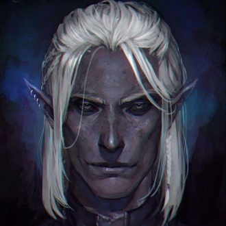
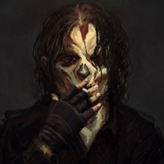
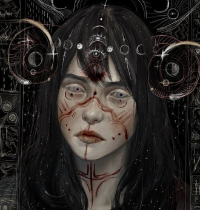
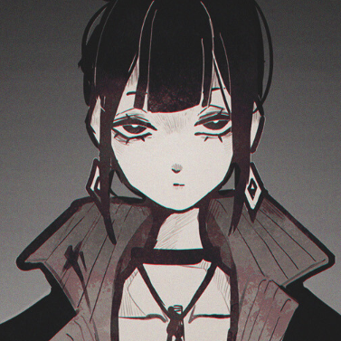
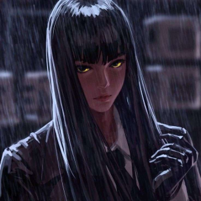

-
Reaves
Descrição
Reaves, um ex-inquisitor e assasino de magos, frio e calculista, graças a seu crescimento puramente militar, não sabe lidar com coisas além do dialogo violento, investigação e intimidação, mesmo que queira mudar, as circunstancias que se encontra não o ajudam. Porta consigo um pedaço de uma prisão hiperdimensional, que usa para lutar com o seu passado.
-
Sabiá

Descrição
Gosta de ajudar os outros, mas não gosta de colocar o seu na reta por isso, sempre quer atirar e na maioria das vezes tá falando "irmão" aleatoriamente. É seguido por uma criança que consegue ver o futuro, e suspeitosamente se parece muito com uma maga poderosa e antiga que desapareceu a suspeitosamente poucos anos.
-
Virgilio
Descrição
Virgílio pode ser descrito como um ser extremamente perseverante e positivo por fora (no entanto, muito diferente por dentro), nunca se deixando abalar por nada, apesar de ser tremendamente azarado. Essa era sua descrição antiga, original, mas dada a certas circunstanciancias e pessoas a sua volta, sua visão de mundo mudou irreparavelmente.
-
Iana
Descrição
Mestre não quis participar =(
-
Mono
Descrição
Xaxa né.
-
Helena
Descrição
Supervisora insana, bipolar e esquizofrenica do grupo acima, não se sabe qual sua motivação, se ela quer que o grupo traia seus superiores, se ela mesmo já os traiu, ou engana a todos para algum proposito maior, misteriosa, doidinha e alta. Suposamente prima de Mono, não parece.